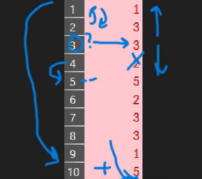

An `ArrayList` in Java is a dynamic, resizable array. Unlike traditional arrays that have a fixed size determined at the time of creation, `ArrayLists` can grow or shrink as needed. They are part of the Java Collections Framework and provide more flexibility. Internally, an `ArrayList` uses an array to store its elements. When the internal array becomes full and you try to add a new element, the `ArrayList` automatically creates a new, larger array, copies all the elements from the old array to the new one, and then adds the new element. This dynamic resizing is what makes `ArrayLists` so useful for situations where you don't know the exact number of elements you'll need to store beforehand.
The basic syntax involves declaring and initializing an `ArrayList`. For example: `ArrayList

A common mistake when working with `ArrayLists` is the "index shifting" problem, especially when iterating and removing elements. When you remove an element at a specific index, all subsequent elements automatically shift one position to the left to fill the gap. This means that if you're iterating through the list and remove an element, the element that was *after* the removed one now occupies the index you just checked. If your loop continues to the next index, you'll skip over this element entirely.
// Example: Removing even numbers, but with a bug
ArrayList<Integer> numbers = new ArrayList<>(Arrays.asList(1, 2, 3, 4, 5, 6));
for (int i = 0; i < numbers.size(); i++) {
if (numbers.get(i) % 2 == 0) {
numbers.remove(i); // Problem: shifts next elements!
}
}
// Expected: [1, 3, 5]
// Actual: [1, 3, 4, 6] - Oops! 4 was skipped because 6 shifted into its place.
Here are some nice ways to get around this:
// Solution 1: Iterate backwards
ArrayList<Integer> numbers1 = new ArrayList<>(Arrays.asList(1, 2, 3, 4, 5, 6));
for (int i = numbers1.size() - 1; i >= 0; i--) {
if (numbers1.get(i) % 2 == 0) {
numbers1.remove(i);
}
}
// Result: [1, 3, 5] - Correct!
// Solution 2: Just Decrement after a Removal
ArrayList<Integer> numbers2 = new ArrayList<>(Arrays.asList(1, 2, 3, 4, 5, 6));
for (int n = 0; n < numbers2.size(); n++) {
if (numbers2.get(n) % 2 == 0) {
numbers2.remove(n);
n--;
}
}
// Result: [1, 3, 5] - Correct!
Enter values and use the controls below to see how an `ArrayList` behaves. Try adding, getting, setting, and removing elements to observe the dynamic nature and index shifting.